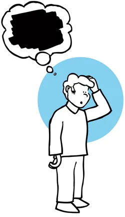
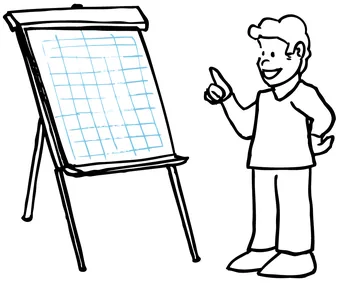
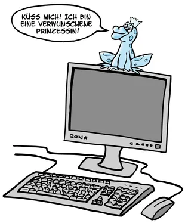
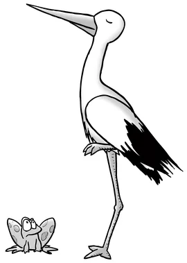
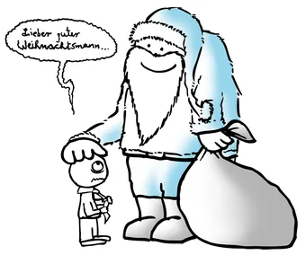
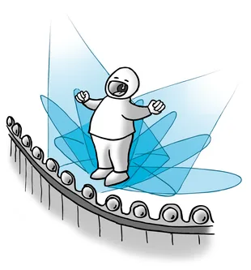
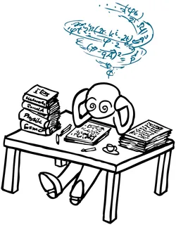

cartoons.de
cartoons.deLampenfieber – Illustrationen zum Buch
Für das Buch „Lampenfieber“ habe ich Illustrationen gezeichnet: vom Blackout über den Vortrag am Flipchart bis zur Prüfungsangst. Mal sind es Frösche und Störche, mal ein Opernsänger oder der Weihnachtsmann, den es vor seinem großen Auftritt packt.
Lampenfieber kennt jeder: vor einem Vortrag, einer Prüfung oder einem Auftritt. Mit etwas Humor lässt es sich leichter nehmen.
Das Buch: Von Prüfungsangst zu Prüfungsmut: Lampenfieber und Auftrittslust (bei Amazon)







Impressum · Datenschutz©
2004–2026 Ronald Markworth